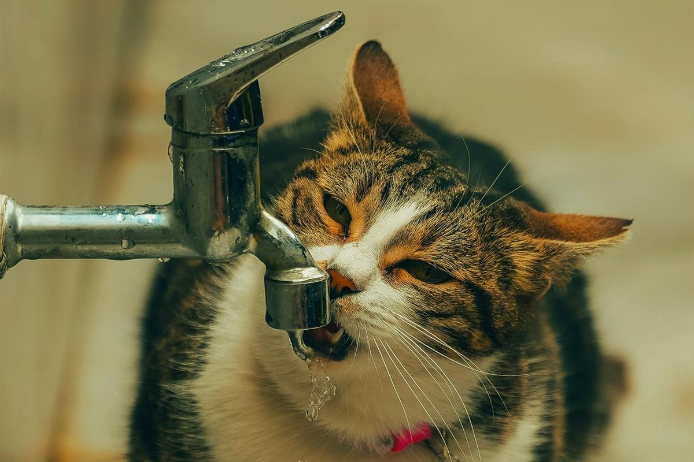

每只猫的鼻纹都不同
猫的鼻纹像人的指纹一样独特，理论上可以用来识别个体，只是日常没人真的去比对。
20 条关于猫的身体、感官、行为和养护的冷知识。知道得越多，越不容易误会它。

猫的鼻纹像人的指纹一样独特，理论上可以用来识别个体。
猫的鼻纹像人的指纹一样独特，理论上可以用来识别个体，只是日常没人真的去比对。
成年猫大约有 230 块骨头，人类是 206 块。猫的锁骨退化，所以能钻进很窄的缝隙。
猫的两只耳朵能分别转向不同声源，帮助它精确定位声音来自哪里。
胡须根部布满神经，能感知气流、宽度和距离，帮助猫在暗处判断缝隙能不能通过。
猫的甜味受体基因失去功能，所以对甜食没有真正的味觉；它可能喜欢奶油的口感，而不是甜味。
光线变强时瞳孔缩成细线，变弱时放大；情绪也会影响瞳孔大小，但不能只靠瞳孔判断心情。
猫在放松时会呼噜，在紧张、疼痛或自我安抚时也可能呼噜。要看身体语言一起判断。
幼猫和老年猫睡得更多。睡眠是猫保存能量和恢复的方式，不要因为白天睡得多就以为它懒。
健康猫可以跳到接近自己身高数倍的高度，所以猫爬架和柜顶对它是纵向空间，不是装饰。
尾巴在跳跃和转身时帮助调整平衡，也是情绪信号：竖起、炸毛、快速摆动含义都不同。
猫的汗腺集中在肉垫，天热时会张嘴呼吸散热；如果安静时也张嘴喘，要警惕呼吸问题。
猫有瞬膜（第三眼睑），平时藏在眼角。生病、脱水或消瘦时可能露出来，值得检查。
现代家猫主要源自非洲野猫（Felis lybica），不是我们从欧洲野猫驯化来的。
农业发展带来鼠害，猫因此靠近人类聚落。猫的驯化更像“自己选择留下”，而不是被完全驯服。
成年猫之间很少用喵喵叫交流；家猫对人喵叫，是在长期相处中学会的沟通方式。
小猫吃奶时会踩妈妈的肚子，成年猫在放松、舒服时保留这个动作，也可能伴随时呼噜。
狭小、封闭、可观察外面的空间能让猫降低压力。新猫到家时，一个纸箱往往比昂贵猫窝更有用。
大约一半到七成猫对猫薄荷有反应，这是遗传的；没有反应不代表猫不快乐。
猫的祖先从猎物中获取水分，主动喝水意愿低。流动水、多个水碗和湿粮都能帮助它多喝水。
剪掉胡须会让猫失去重要的空间感知工具，可能变得犹豫、碰撞或不安。掉落的胡须会自然更新。